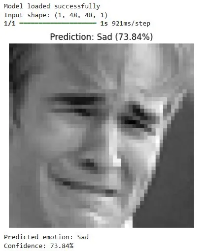
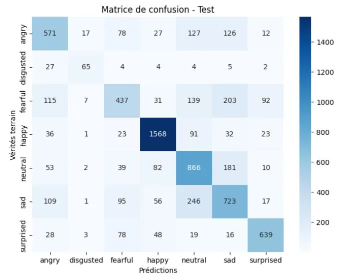

Reconnaissance d’émotions faciales sur STM32
Un réseau de neurones convolutif entraîné sur 28 709 visages puis embarqué sur un microcontrôleur ARM Cortex-M7.

Contexte et objectif
Concevoir et déployer un système d’intelligence artificielle embarquée capable de reconnaître des émotions faciales à partir d’images, en respectant les contraintes de calcul et de mémoire d’un microcontrôleur STM32. Applications visées : interaction homme–machine et systèmes intelligents.
Architecture de la chaîne
- Dataset FER48×48 px, niveaux de gris, 7 émotions
- Entraînement CNNPython, TensorFlow/Keras
- ConversionSTM32CubeMX + X-CUBE-AI
- InférenceSTM32F746G-DISCO
- AffichageUART (PuTTY) puis écran LCD
Données
- Dataset FER (Facial Expression Recognition), images 48×48 en niveaux de gris.
- 7 classes : colère, dégoût, peur, joie, neutre, tristesse, surprise.
- 28 709 images d’entraînement et 7 178 images de test.
Réalisation
- Prétraitement des images (normalisation, redimensionnement).
- Entraînement d’un CNN avec TensorFlow/Keras et évaluation (accuracy, matrice de confusion).
- Conversion des images de test en tableaux C et intégration avec STM32Cube.AI.
- Déploiement sur STM32F746G-DISCO et tests d’inférence sur images statiques.
- Affichage des résultats via UART, puis sur l’écran LCD de la carte.
Stack technique
| Modèle | Python, TensorFlow/Keras, OpenCV |
|---|---|
| Embarqué | STM32CubeMX, STM32CubeIDE, X-CUBE-AI |
| Matériel | STM32F746G-DISCO, écran LCD |
| Communication | UART (PuTTY) |
Résultats
- Accuracy globale d’environ 68 % sur l’ensemble de test.
- Inférence fonctionnelle sur microcontrôleur malgré des ressources limitées.
- Chaîne complète validée, de l’entraînement à l’affichage embarqué.

